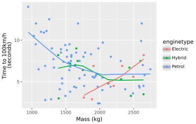
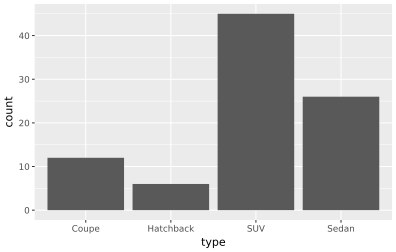

QatarCars is a lightweight CSV describing modern passenger cars from around the world. The aim is to give students a small, well‑structured dataset that still covers a range of data‑science tasks (merging, filtering, statistics, machine‑learning). It was originally created in 2025 by Paul Musgrave and his International Politics statistics class at Georgetown University. This package ports the dataset into Python and allows users to decide whether to engage with the data as either a pandas or polars dataframe. QatarCars is available in its original form as a csv, in Stata, and as an R Package.
A string denoting the manufacturer/brand of the car
model
A string denoting the specific type of the car
length
A float denoting the car’s length (in meters)
width
A float denoting the car’s width (in meters)
height
A float denoting the car’s height (in meters)
seating
An integer denoting how many seats are within the car
trunk
An integer denoting the trunk’s volume (in liters)
economy
A float denoting how many liters of fuel is required to travel 100km
performance
A float denoting how many seconds it takes to accelerate to 100km/h from a dead stop
mass
A float of the car’s mass (in kg)
horsepower
An integer denoting the car’s horsepower
type
A string denoting the body-type of the car
enginetype
A string denoting the type of fuel/energy used by the engine
Polars or Pandas? You decide!
Pandas is pretty much ubiquitous in Python data analytics, often considered the “default” implementation of a dataframe. However, Polars is gaining in popularity because of its more consistent and (especially comming to Python from R) intuitive syntax. It’s also very fast, which can be great when dealing with large data. However, the syntax of Polars compared to Pandas is often quite different. So, for pedagogical/learning purposes, I’ve made it so that the core function for the package get_qatar_cars can return either a pandas or polars dataframe. It’s up to you!
Examples
Let’s look at the first few observations. We’ll visualize using plotnine which is a great import of the ggplot2 package into Python.
from qatarcars import get_qatar_carsimport plotnine as p9from qatarcars import get_qatar_carsdf = get_qatar_cars("pandas") # or "polars"df.head()
origin
make
model
length
width
height
seating
trunk
economy
horsepower
price
mass
performance
type
enginetype
0
Germany
BMW
3 Series Convertible
4.713
1.827
1.440
5
480
11.8
184
190300
1777
5.8
Coupe
Petrol
1
Germany
BMW
3 Series Sedan
4.713
1.827
1.440
5
59
7.6
386
164257
1653
4.3
Sedan
Petrol
2
Germany
BMW
X1
4.505
1.845
1.642
5
505
6.6
313
264000
1701
5.4
SUV
Petrol
3
Germany
Audi
RS Q8
5.012
1.694
1.998
5
605
12.1
600
630000
2490
3.6
SUV
Petrol
4
Germany
Audi
RS3
4.542
1.851
1.412
5
321
8.7
400
310000
1565
3.8
Sedan
Petrol
I’m curious how much a vehicle’s weight impacts its ability to get to 100 km/hr from a dead stop?
(p9.ggplot(df) +p9.aes(x ='mass', y ='performance', group ='enginetype', color ='enginetype') +p9.geom_point() +p9.geom_smooth() +p9.labs(x ='Mass (kg)', y ='Time to 100km/h \n(seconds)'))
Does this change based on what kind of drivetrain it has?
(p9.ggplot(df) +p9.aes(x ='mass', y ='performance', group ='enginetype', color ='enginetype') +p9.geom_point() +p9.geom_smooth() +p9.labs(x ='Mass (kg)', y ='Time to 100km/h \n(seconds)'))

Interesting! Electric cars take more of a performance hit the heavier they get whereas hybrids and petrol-based vehicles tend to flatten out in their performance.
Let’s check out the distribution of cars by body type in the dataset.
(p9.ggplot(df) +p9.aes(x ='type') +p9.geom_bar())

A lot of SUVs!
Have fun! 🚗
License
The qatarcars python package is licsensed with a CC0 1.0 Universal (Creative Commons) license. Have fun with it!
Bibliography
Musgrave, Paul. 2025. “Introducing the Qatar Cars Dataset.” July 8. https://musgrave.substack.com/p/introducing-the-qatar-cars-dataset